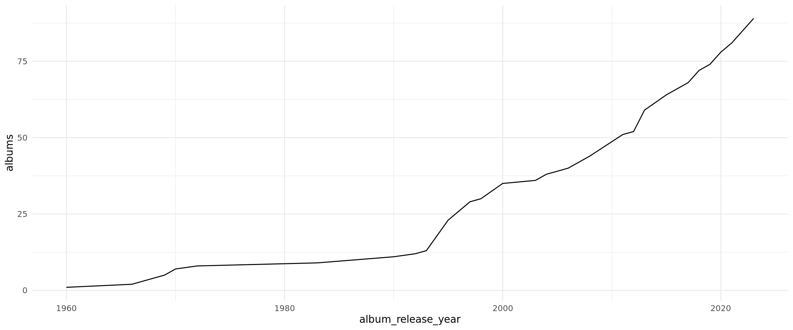
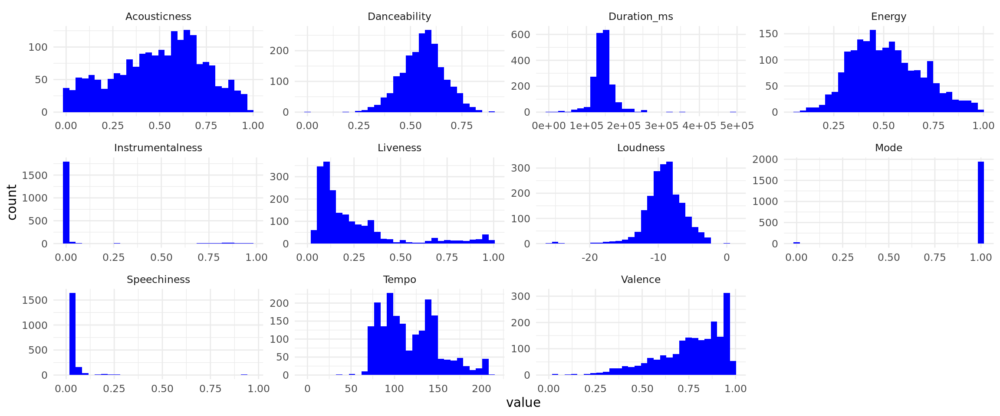
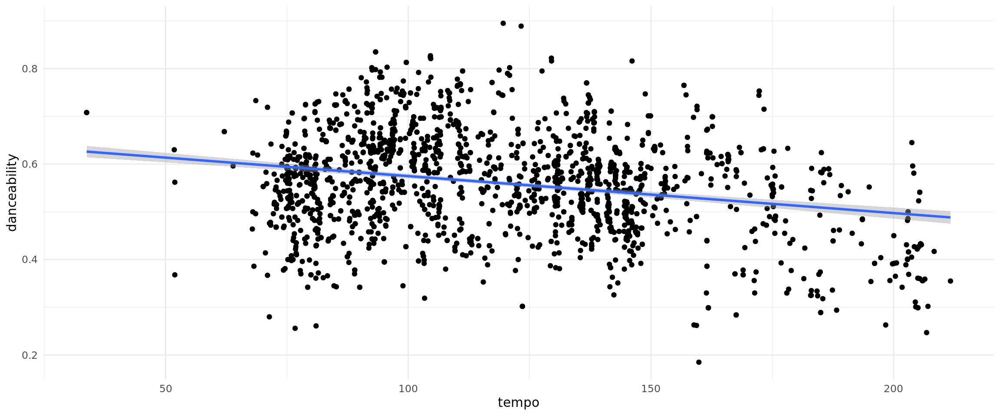

I recently appeared on my pal Morgan Tams’ radio program on Cortes Island Radio. The idea is to appear weekly and talk about a single artist/band for 15 minutes. Not terribly ambitious but I thought it would be fun to explore the spotify API and generate some summaries of who we are talking about. For our first installment, Morgan and I chatted about the legendary Buck Owens. Darn—I just lost 10 minutes of my life searching for Buck Owens gifs. Oh well. Here is a still of the man:

Packages
Thankfully there is the R package — spotifyr — that makes requesting data from the spotify API very easy. Since spotifyr is on CRAN we can install it like usual.
install.packages('spotifyr')For this post I am also using the following packages which you will need to install.
install.packages('dplyr')
install.packages('usethis')
install.packages('ggplot2')
install.packages('tidyr')and load:
library(spotifyr)
library(dplyr, warn.conflicts = FALSE)
library(usethis)
library(ggplot2)
library(tidyr)There is some hocus-pocus to set up your credentials to access the spotify data which does require a paid spotify account. The spotifyr developer provides some nice instructions here and the spotify developer guide provides a few more details. Probably the most important thing to note here is that you want to save your spotify credentials in your .Renviron file. If you’ve never dealt with environment variables in R before, Efficient R programming provides a succinct description. In a nutshell our .Renviron file is a way for us to provide the value of a variable consistently across sessions and outside of a script. I always edit it with the usethis package:
edit_r_environ()Setting up your credentials as environment variables is a one-time thing. After that, functions in the spotifyr package will just work as they all call get_spotify_access_token() by default. Now that I have all credential sorted out let’s try and see what we can find out about Buck from the spotify API.

buck_raw <- get_artist_audio_features('buck owens')Warning in dplyr::left_join(., track_audio_features, by = "album_id"): Each row in `x` is expected to match at most 1 row in `y`.
ℹ Row 1 of `x` matches multiple rows.
ℹ If multiple matches are expected, set `multiple = "all"` to silence this
warning.dim(buck_raw)[1] 1983 39This is lots of information (39 columns just on Buck!). With these types of nested JSON data, dplyr’s glimpse function provides a nice clean way of looking at the data.
glimpse(buck_raw)Rows: 1,983
Columns: 39
$ artist_name <chr> "Buck Owens", "Buck Owens", "Buck Owens",…
$ artist_id <chr> "2FMZn5P3WATd7Il6FgPJNu", "2FMZn5P3WATd7I…
$ album_id <chr> "4Owb7bk0AddcMYLLcQHEML", "4Owb7bk0AddcMY…
$ album_type <chr> "album", "album", "album", "album", "albu…
$ album_images <list> [<data.frame[3 x 3]>], [<data.frame[3 x …
$ album_release_date <chr> "2023-01-20", "2023-01-20", "2023-01-20",…
$ album_release_year <dbl> 2023, 2023, 2023, 2023, 2023, 2023, 2023,…
$ album_release_date_precision <chr> "day", "day", "day", "day", "day", "day",…
$ danceability <dbl> 0.545, 0.620, 0.489, 0.579, 0.456, 0.567,…
$ energy <dbl> 0.398, 0.478, 0.293, 0.355, 0.540, 0.405,…
$ key <int> 8, 9, 3, 8, 10, 4, 9, 9, 3, 2, 8, 7, 7, 6…
$ loudness <dbl> -11.890, -10.100, -10.480, -11.659, -10.0…
$ mode <int> 1, 1, 1, 1, 1, 1, 1, 1, 1, 1, 1, 1, 1, 1,…
$ speechiness <dbl> 0.0386, 0.0625, 0.0330, 0.0320, 0.0443, 0…
$ acousticness <dbl> 0.675, 0.479, 0.579, 0.646, 0.624, 0.198,…
$ instrumentalness <dbl> 0.00e+00, 1.99e-04, 3.69e-05, 0.00e+00, 1…
$ liveness <dbl> 0.0666, 0.0551, 0.1230, 0.2520, 0.1600, 0…
$ valence <dbl> 0.718, 0.885, 0.669, 0.799, 0.662, 0.780,…
$ tempo <dbl> 147.685, 165.843, 144.722, 142.691, 146.9…
$ track_id <chr> "3NFKion7rG1YWSNHD8NKAP", "3bjJcKXVNxXBX3…
$ analysis_url <chr> "https://api.spotify.com/v1/audio-analysi…
$ time_signature <int> 4, 4, 4, 4, 4, 4, 4, 3, 3, 4, 4, 4, 4, 4,…
$ artists <list> [<data.frame[1 x 6]>], [<data.frame[1 x …
$ available_markets <list> <"AR", "AU", "AT", "BE", "BO", "BR", "BG…
$ disc_number <int> 1, 1, 1, 1, 1, 1, 1, 1, 1, 1, 1, 1, 1, 1,…
$ duration_ms <int> 147173, 123653, 155960, 148386, 149720, 1…
$ explicit <lgl> FALSE, FALSE, FALSE, FALSE, FALSE, FALSE,…
$ track_href <chr> "https://api.spotify.com/v1/tracks/3NFKio…
$ is_local <lgl> FALSE, FALSE, FALSE, FALSE, FALSE, FALSE,…
$ track_name <chr> "Above and Beyond", "Tired of Livin'", "I…
$ track_preview_url <chr> "https://p.scdn.co/mp3-preview/172f00b020…
$ track_number <int> 1, 2, 3, 4, 5, 6, 7, 8, 9, 10, 11, 12, 13…
$ type <chr> "track", "track", "track", "track", "trac…
$ track_uri <chr> "spotify:track:3NFKion7rG1YWSNHD8NKAP", "…
$ external_urls.spotify <chr> "https://open.spotify.com/track/3NFKion7r…
$ album_name <chr> "Above and Beyond", "Above and Beyond", "…
$ key_name <chr> "G#", "A", "D#", "G#", "A#", "E", "A", "A…
$ mode_name <chr> "major", "major", "major", "major", "majo…
$ key_mode <chr> "G# major", "A major", "D# major", "G# ma…This is too many columns for now. Let’s narrow our focus to make it easier to work with.
buck <- buck_raw %>%
select(album_release_date, album_release_year, danceability:tempo, time_signature,
duration_ms, track_name, album_name, key_mode) Summaries of Buck
With this data in hand I’ll make some rapid fire summaries of Buck Owens. These summaries turned out not to be particularly compelling radio material but I’m not going to let that deter me. Taking cue from the spotifyr package, what is Buck’s most common key?
buck %>%
count(key_mode, sort = TRUE) key_mode n
1 G# major 326
2 A major 308
3 D# major 213
4 G major 187
5 E major 165
6 A# major 137
7 C major 119
8 F major 108
9 F# major 108
10 D major 101
11 C# major 94
12 B major 81
13 B minor 5
14 C# minor 5
15 F minor 5
16 D minor 4
17 E minor 4
18 A# minor 3
19 F# minor 3
20 G minor 3
21 G# minor 3
22 D# minor 1The man loved G#/Ab major. It is a bit of unusual key and you can readily find some speculation online about why Buck might have tuned down a half step. And not much in the minor keys. I guess country finds sadness another way. How about time signature?
buck %>%
count(time_signature, sort = TRUE) time_signature n
1 4 1747
2 3 214
3 5 18
4 1 3
5 0 1A few suspect data points (zero time signature?) but overall Buck made a career of keep things pretty straight forward. Mostly 4/4 with the occasional waltz.
What about Buck’s album output. Let’s plot his cumulative albums over time:
cumulative_albums <- buck %>%
select(album_release_year, album_name) %>%
distinct(.keep_all = TRUE) %>%
count(album_release_year) %>%
arrange(album_release_year) %>%
mutate(albums = cumsum(n))
ggplot(cumulative_albums, aes(x = album_release_year, y = albums)) +
geom_line()
Ok so this data isn’t particularly good. Likely what would be help is an original_release_date column. Buck was most active in the sixties while the data suggests his output was highest during the mid-nineties. Presumably these are re-issue dates. Still good to know — can’t rely on that year data.
The audio features available through the spotify api are very interesting numeric summaries of songs and will be fun to play around with. I won’t go into descriptions of each audio feature but we will calculate histograms of all Buck’s songs for each feature. Most features range between 0 and 1 so the distributions can give us a sense of Buck’s music tendencies.
buck %>%
select(danceability:tempo, duration_ms) %>%
gather() %>%
mutate(key = tools::toTitleCase(key)) %>%
ggplot() +
geom_histogram(aes(x = value), fill = "blue") +
facet_wrap(~key, scales = "free")
I really like looking at these distributions. Quite what they represent (or how they are derived) is something that I haven’t quite wrapped my brain around. However they do offer us some high level assessment of an artist’s catalogue. If the album release date info was better we could do some interesting retrospectives. In another post I’ll try to find a better example. Buck’s songs are reasonably dancy, don’t vary much in length and are very positive. This conflicts with my prior of country music being sad and is also likely an interesting hypothesis to further test in a future post.
Lastly let’s have a look and see if danceability is related to tempo.
cor.test(buck$danceability, buck$tempo, method = "spearman")
Spearman's rank correlation rho
data: buck$danceability and buck$tempo
S = 1529672927, p-value = 2.015e-15
alternative hypothesis: true rho is not equal to 0
sample estimates:
rho
-0.1770145 buck %>%
filter(danceability != 0) %>%
ggplot(aes(x = tempo, y = danceability)) +
geom_point() +
geom_smooth(method = "lm") `geom_smooth()` using formula = 'y ~ x'
There appears to be a very slight and negative relationship with danceability and tempo. If you are really dancing, you probably want that song to be short. We all only have so much stamina.
This has been a short usecase of using the spotify API and in particular the spotifyr package. It is actually pretty exciting to have so much music info at your fingertips.